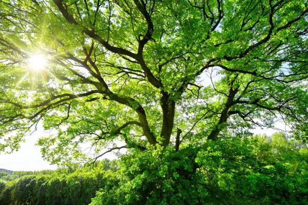

Missão
Promover a sustentabilidade ambiental por meio da restauração de ecossistemas, da educação ecológica e do engajamento da sociedade em ações que transformam o planeta.
Somos uma organização dedicada à preservação das árvores e à defesa do meio ambiente. Atuamos com reflorestamento, educação ambiental e conscientização sobre práticas sustentáveis.
Promover a sustentabilidade ambiental por meio da restauração de ecossistemas, da educação ecológica e do engajamento da sociedade em ações que transformam o planeta.
Ser referência nacional em reflorestamento e educação ambiental, inspirando pessoas e organizações a adotarem práticas sustentáveis.
Sua contribuição é essencial para continuarmos transformando vidas e preservando o meio ambiente. Faça uma doação segura e ajude nossos projetos a crescerem.
Fazer doaçãoPublicamos relatórios anuais com todos os detalhes sobre a utilização dos recursos e os impactos alcançados.
Mais de 300 árvores foram plantadas com o apoio de voluntários locais. O evento reforça o compromisso da ONG com o meio ambiente e a comunidade.
Parceria com empresas locais vai ampliar ações de limpeza e conservação de nascentes na região.
E-mail: contato@greenwash.org.br
Telefone: (11) 91111-1111
São Pedro - SP